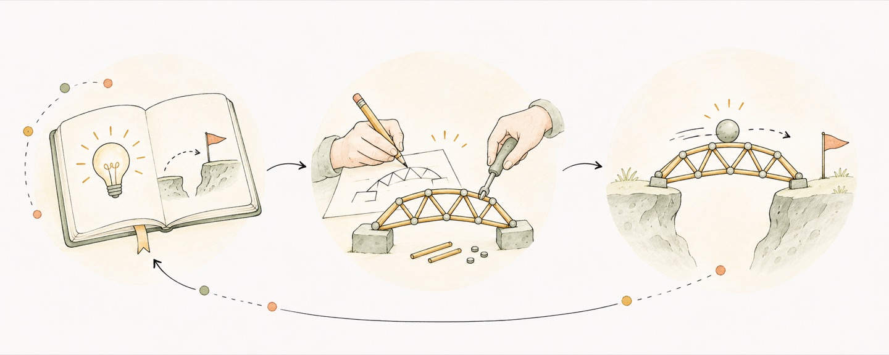
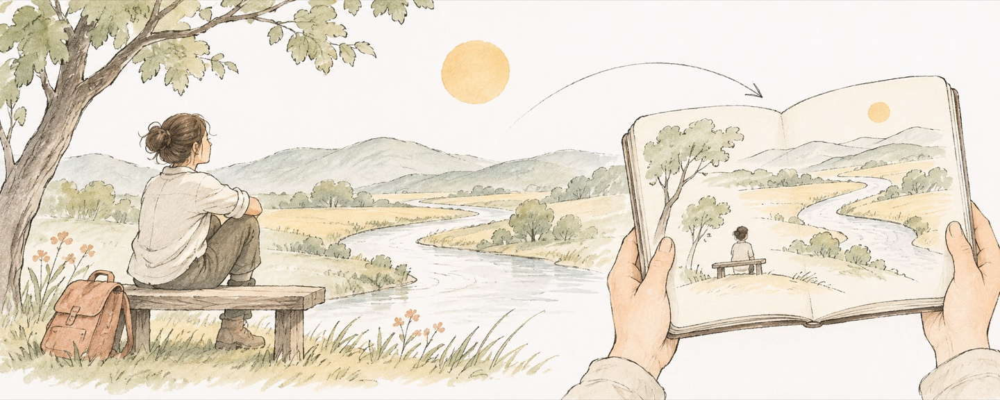

Remember that life is finite. Choose how to live it.
I want to give less weight to a stranger's passing judgment.
When two approaches reach the same goal, I compare the time and effort each takes.

I want to give less weight to a stranger's passing judgment.


I want to enjoy a view, a cup of tea, or a meaningful occasion fully.
I record ideas on my phone. I want to add the reasons behind a decision and where to begin next.
When I agree with an idea, I want to understand why. A sound objection should have a chance to change my mind.
What were neighboring fields working on at the time? Who carried an idea forward, and what did they change?